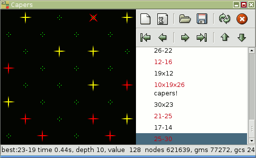
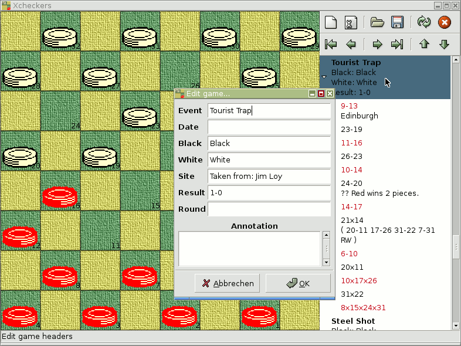
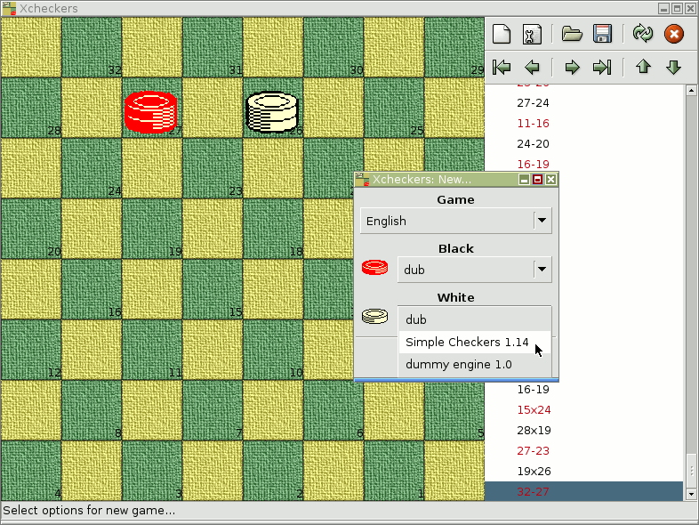

He capers, he dances, he has eyes of youth. --Shakespeare / The Merry Wives of Windsor
Play checkers against the computer and
study draughts games from books.
I will, therefore, take occasion to assert that the higher powers of the reflective intellect are more decidedly and more usefully tasked by the unostentatious game of draughts than by all the elaborate frivolity of Chess. --Poe / The Murders in the Rue Morgue.
Its really more an office application than a game: a game would let the user enter a small café, and with the aid of a waiter, sit down at some table, join a game, have a chat, get up, and settle on another table, to play another opponent.
Still, capers tries its best, to give you a pleasant time with Martin Fierz' strong checkers engines that search a given board for the 'best' move. Most commands are in the buttons, yet there are some more and powerful ones hidden in the context-menu (right-mouse-click).
Capers is free software: you are invited to share and tinker. if in doubt, see accompanying file COPYING for details on distribution and derivation.
Capers depends on python and gtk, and pygtk, which glues them together, version 2.4 of pygtk at least; also, it needs gnome canvas to display the board, and python-ctypes, to talk to the engines.
It should work in most linux distributions, provided the dependencies are met and sufficiently recent. It might also work in Windows, if you manage to collect all the above packages.
You may want to visit Martin Fierz' checkers page http://www.fierz.ch/checkers.htm.


This page is http://arton.cunst.net/capers/index.html.
Send suggestions, bug reports and bug fixes to pch(a)myzel.net